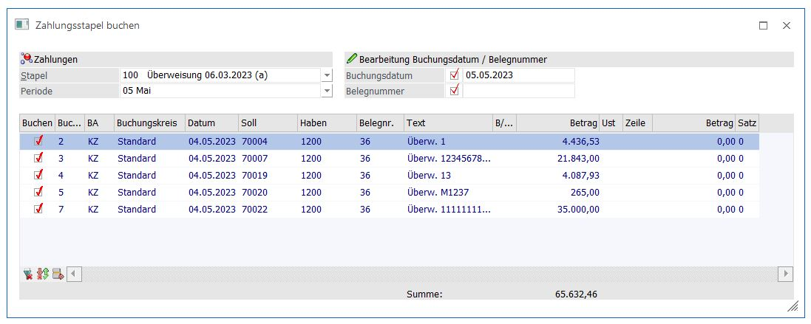
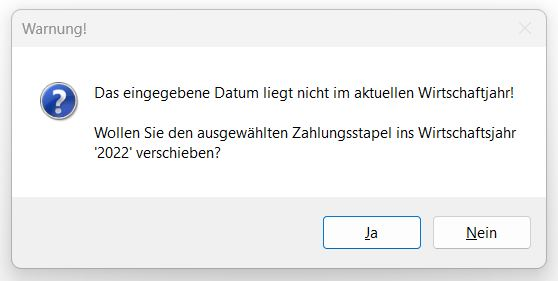
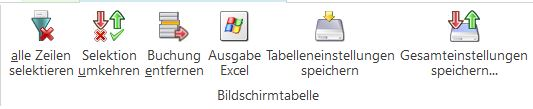
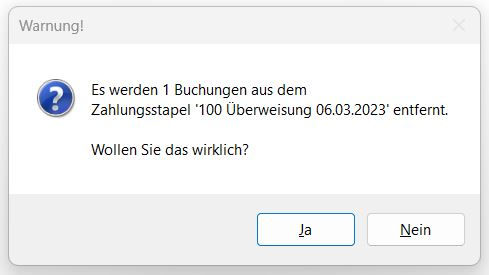
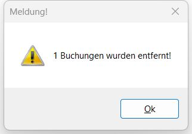
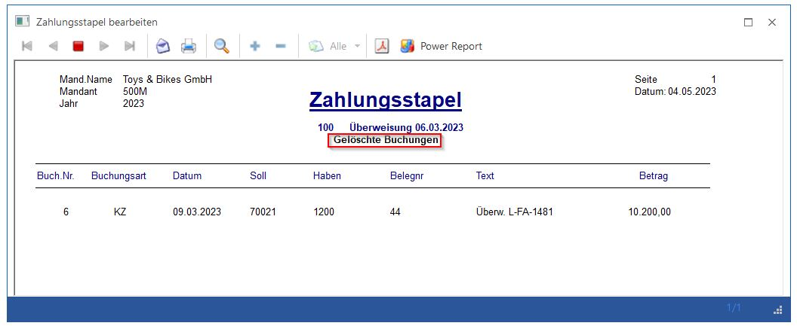
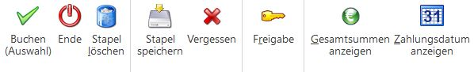
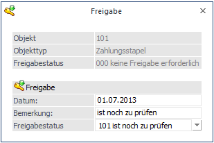

Im Menüpunkt Zahlungsverkehr gibt es die Möglichkeit, die durch den Zahlungsvorgang ausgelösten Buchungen sofort zu buchen, oder in einen Buchungsstapel abzustellen, der zu einem späteren Zeitpunkt übernommen werden kann.
Der Vorteil dieser Variante ist, dass die Offenen Posten als ausgeglichen aber noch nicht als bestätigt (mit dem Mahnzähler -2) gekennzeichnet werden (-1 wäre wirklich ausgeglichen). Wenn die Zahlungen durch das Eintreffen des Bankbeleges zu einem späteren Zeitpunkt bestätigt werden, kann der Buchungsstapel im Menüpunkt
1 Buchen
1 Zahlungsverkehr
1 Zahlungen buchen
übernommen und automatisch gebucht werden.
Erst nach Einlesen des Buchungsstapels werden die betroffenen Offenen Posten im OP-Blatt auf -1 (ausgeglichen) gesetzt (zuvor zeigte der Mahnzähler -2 an, dass die Zahlung zwar schon erfolgt, aber von der Bank noch nicht bestätigt wurde).

Ø Stapel
Im Feld Stapel werden alle vorhandenen Buchungsstapel angezeigt. Wählen Sie mit der Maus (oder durch Herunterklappen der Auswahllistbox mit ALT + Pfeil-nach-Unten) den gewünschten Stapel.
Ø Periode
Hier wird die Buchungsperiode vorgeschlagen, die sich aus dem Datum des Zahlungsstapels ergibt. Die Periode kann manuell geändert werden.
Achtung
Achten Sie darauf, dass die Buchungsperiode mit dem Datum des Zahlungsstapels übereinstimmt. Sonst werden eventuelle Skontobuchungen in die falsche Periode gebucht und damit stimmt die UVA-Voranmeldung nicht mehr überein.
Ø Buchungsdatum
Wird die Checkbox aktiviert, kann im nachfolgenden Eingabefeld das Buchungsdatum eingegeben werden, mit dem alle Buchungszeilen gebucht werden sollen. Liegt das eingegebene Buchungsdatum nicht im aktuellen Wirtschaftsjahr und kann das Buchungsdatum einem im Mandanten vorhandenen Wirtschaftsjahr zugeordnet werden, dann wird folgende Meldung ausgegeben:

Wird die Meldung mit JA bestätigt, dann wird der Zahlungsstapel in das Wirtschaftsjahr verschoben, das dem Buchungsdatum entspricht. Der Zahlungsstapel kann dann in diesem Wirtschaftsjahr gebucht werden. Wird die Meldung mit NEIN bestätigt, dann muss ein anderes Buchungsdatum eingegeben werden.
Ø Belegnummer
Wird die Checkbox aktiviert, kann im nachfolgenden Eingabefeld eine Belegnummer (z.B. die Nummer des Bank-Kontoauszuges) eingetragen werden, die dann auch für alle Buchungen verwendet wird.
In der Tabelle werden alle Buchungen angezeigt, die sich im Stapel befinden.
Standardmäßig sind alle Buchungen zur Übernahme aktiviert. Durch Anklicken der Checkbox "Auswahl" können einzelne Buchungen von der Übernahme ausgenommen werden, weil z.B. die Überweisung nicht durchgeführt wurde, oder weil der Scheck "geplatzt" ist.
Alle Buchungen, bei denen die Checkbox "Auswahl" deaktiviert wurde, werden im Zuge der weiteren Bearbeitung aus dem Stapel gelöscht. Das hat auch die Auswirkung, dass die ursprüngliche Faktura wieder ihren alten Mahnzähler erhält.
Tabellenbuttons

Ø alle Zeilen selektieren
Durch Anklicken des Alle-Buttons werden alle Buchungen im Buchungsstapel selektiert, egal, welchen Zustand die Buchung vor Betätigung des Buttons hatte.
Ø Selektion umkehren
Durch Anklicken des Umkehr-Buttons wird bei allen Buchungen die Selektion bei "Auswahl" in das Gegenteil gekehrt. D.h. alle Buchungen, die vorher selektiert waren, sind deselektiert und alle Buchungen, die vorher deselektiert waren, sind nachher selektiert.
Beispiel
Aus einem Zahlungsstapel, der 100 Buchungen umfasst, sollen nur 10 gebucht werden. Damit nicht 90 Buchungen deselektiert werden müssen, werden einfach die 10 Buchungen, die benötigt werden, deselektiert und dann der Umkehr-Button betätigt. Dadurch werden die 90 Buchungen deselektiert und die 10 richtigen Buchungen selektiert.
Hinweis
Die vom Zahlungsverkehr erstellten Buchungen verwenden, sofern bei der jeweiligen Buchungsart eingestellt, Nummernkreise und füllen das Feld OP-Nummer.
Ø Buchung entfernen
Dieser Button ermöglicht das Entfernen von Buchungen aus dem Stapel. Es wird in eine zusätzliche Spalte mit dem Löschsymbol "Papierkorb" eingefügt und die Zeile ist farbig hinterlegt. Wird "Buchen (Auswahl) ausgeführt, dann kommt folgende Warnmeldung.

Bei Auswahl "NEIN" geht das Programm in die Tabelle ohne Ausführung zurück. Wird mit "JA" bestätigt, erfolgt die Ausführung und folgender Hinweis erschein:

Zusätzlich stellt das Programm die gelöschte Buchung in Protokollform ab.

Die Buchungen stehen nach der Ausführung des Löschvorganges wieder in den Offenen Posten.
Ø Tabelleneinstellungen speichern
Die Eingabefelder einer Tabelle können grundsätzlich frei gestaltet werden. Dabei können Spalten an beliebige Positionen verschoben oder die Spaltenbreiten verändert werden. Durch Anwahl des Buttons "Tabelleneinstellungen speichern" werden die Einstellungen benutzerspezifisch gespeichert und bei dem nächsten Aufruf des Programmpunktes wieder vorgeschlagen.
Ø Gesamteinstellungen speichern
Im Gegensatz zu "Tabelleneinstellungen speichern" können mit "Gesamteinstellungen speichern" mehrere Tabellenaufbauten gespeichert und nach Wunsch geladen werden. Zusätzlich werden Sonderfunktionen der Tabelle (z.B. "Spalte gruppieren") ebenfalls bei der Speicherung bedacht.
Buttons

Ø Buchen (Auswahl)
Durch Anklicken des OP-Buttons werden alle aktivierten Buchungen gebucht. Befinden sich im Stapel auch deaktivierte Buchungen, wird ein entsprechender Hinweis ausgegeben, mit der Frage, ob die deaktivierten Buchungen wirklich gelöscht werden sollen. Wird die Frage mit Ja bestätigt, werden die Mahnzähler der betroffenen Fakturen wieder auf ihren ursprünglichen Wert (vor Durchführung des Zahlungsverkehrs) zurückgesetzt.
Ø Ende
Durch Anklicken des Ende-Buttons wird das Fenster geschlossen.
Ø Löschen
Durch Anklicken des Löschen-Buttons wird der selektierte Stapel komplett gelöscht. Alle Fakturen, die durch den Stapel betroffen sind, erhalten ihren ursprünglichen Mahnzähler, den sie vor Durchführung des Zahlungsverkehrs gehabt haben, zurück.
Ø Speichern
Durch Anklicken des Speichern-Buttons werden alle Veränderungen in den Stapel rückgeschrieben. Dieser Stapel kann dann jederzeit neu bearbeitet werden. Alle Buchungen, die deaktiviert wurden, werden nach entsprechender Abfrage gelöscht.
Ø Vergessen
Durch Anklicken des Vergessen-Buttons werden alle Änderungen rückgängig gemacht und der Ursprungszustand des Stapels wird wieder hergestellt.
Ø Freigabe
Durch Drücken dieses Buttons wird das Freigabefenster geöffnet, um den Freigabestatus eines Buchungsstapels verändern zu können.

Ø Gesamtsummen anzeigen
Wird dieser Button geklickt, wird in der Combo "Stapel" für jeden Stapel die Summe der enthalten Zahlungsbeträge angezeigt.
Der Button wird dann "gedrückt dargestellt", beim erneuten Klick auf den Button werden die Beträge wieder aus der Combo entfernt. Die Einstellung des Buttons wird pro Benutzer gespeichert und beim nächsten Öffnen des Fensters wiederhergestellt.
Ø Zahlungsdatum anzeigen
Beim Betätigen dieses Buttons wird das Zahlungsdatum, welches im Zahlungsverkehr angegeben, in der Stapelauswahl angezeigt.
Der Button wird dann "gedrückt dargestellt", beim erneuten Klick auf den Button werden die Beträge wieder aus der Combo entfernt. Die Einstellung des Buttons wird pro Benutzer gespeichert und beim nächsten Öffnen des Fensters wiederhergestellt.